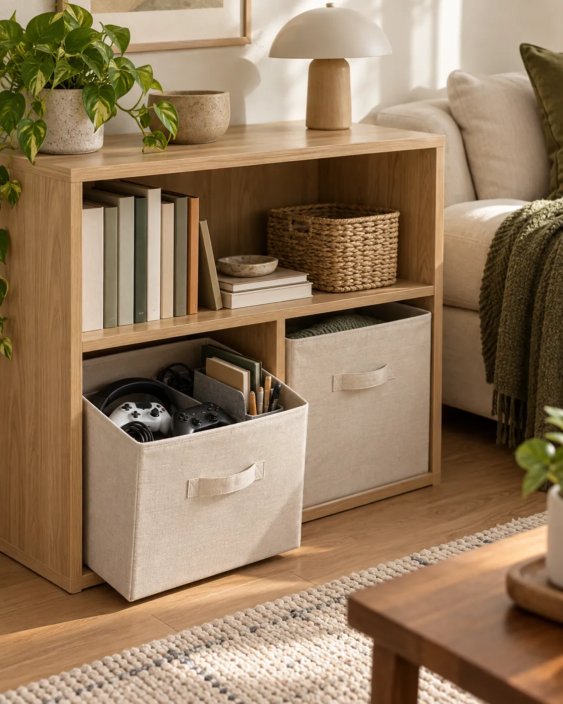
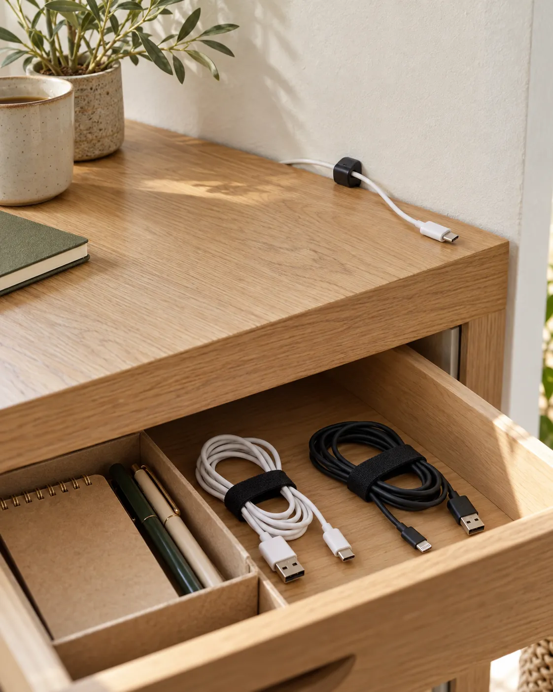

SMALL SPACE LIVING · LIVING ROOM
7 Small Living Room Storage Ideas
Give blankets, remotes, books and everyday belongings an easy-to-reach home. These practical ideas help a small apartment living room work for the way you use it.

LIVING ROOM IDEA 01
Keep walkways clear before adding storage
A small living room often doubles as a place to watch TV, read, play games and spend time with guests. Before adding an organizer, look at the route from the doorway to the sofa and through to the next room. Move bags, loose shoes and temporary piles out of that route. Storage is useful when it makes the room easier to move through.
Make it work: Choose one recurring source of clutter and give it a destination. A shopping bag may belong by the entryway; paperwork may belong at your desk. Keep the things you use in the living room here, and return the rest to their own spaces. Try your arrangement during an ordinary evening before buying anything.
LIVING ROOM IDEA 02
Give remotes an easy-to-reach home
Put the TV remote and streaming-device remote in one shallow tray within reach of your usual seat. An existing small dish can do the job. The point is a predictable landing place, rather than a tray that holds every loose object in the room. Leave enough table space for a drink or book.
Make it work: Choose a position that works while seated and does not require moving a lamp each time. When another household member finishes watching TV, the remote goes back to that same spot. If you have several remotes, keep only the ones still in use here. A tray on an existing side table avoids introducing another piece of furniture.
LIVING ROOM IDEA 03
Store everyday throws in a compact ottoman
Keep one or two everyday throws near the sofa and move seasonal extras to a closet. A compact storage ottoman can give dry blankets a home if the room has space for it. Fold a throw loosely enough to lift it out without emptying everything underneath. Avoid filling the compartment so tightly that the lid becomes difficult to close.
Make it work: Measure the footprint and the space needed to remove the lid. Test the location with a box of similar size: can you still walk past the sofa and open nearby doors? Follow the manufacturer’s assembly and use instructions. This option is worth considering when blankets repeatedly collect on the floor, rather than simply because the corner looks empty.
Optional shopping pick: SONGMICS folding storage ottoman
The listing is for a 15 × 15 × 15-inch ottoman. Compare the outside dimensions and lid access with your available floor space; usable internal storage is smaller than the exterior.
Check this option on Amazon →
LIVING ROOM IDEA 04
Bin small categories on an existing shelf
Small categories such as game controllers, a puzzle or reading supplies are easier to put away when each has its own bin. Use an existing shelf before buying a new unit. Keep the bin near the activity it supports, and make its contents clear with a simple label if several people share the room.
Make it work: Measure the shelf opening, including its depth and any trim, before choosing a cube. Check that a loaded bin can be pulled out comfortably. Keep items you reach for every day toward the front. Fabric cubes suit ordinary lightweight belongings; they are not secure document storage. Keep active electronics and charging equipment outside enclosed bins.
Optional shopping pick: Amazon Basics beige fabric storage cubes
The selected listing is a six-pack of 10.5 × 10.5 × 11-inch cubes. Check your shelf openings and whether you need that many bins before ordering.
Check this option on Amazon →LIVING ROOM IDEA 05
Edit the bookshelf to what you use
A bookshelf can hold useful belongings without becoming a wall of miscellaneous storage. Start with the books and magazines you still read. Return borrowed items, recycle old catalogs and move material that belongs elsewhere. Group the remaining books so you can see their spines and remove one without dismantling a display.
Make it work: Reserve one shelf area for books and another for a small category of supplies. Leave room to put things back easily. You do not need to leave an arbitrary percentage empty or buy matching decor. Use a stable existing bookcase according to its installation instructions, and keep frequently used items at a comfortable reach.

LIVING ROOM IDEA 06
Gather disconnected spare cables
A drawer can become crowded with old charging cables, adapters and headphones. Separate the disconnected spare cords from the cables currently in use. Identify what each spare cord fits and remove obsolete ones through an appropriate local reuse or electronics-recycling option. Put the useful spares together in an existing drawer or box.
Make it work: Loosely coil each disconnected cord and use a reusable tie to keep it separate. A small label can identify a device whose connector is easy to confuse. Avoid sharp bends and tight wrapping. This is a storage idea for spare cables, not a way to bundle equipment while it is powered or charging. Keep the daily charger accessible where you actually use it.
Optional shopping pick: VELCRO Brand ONE-WRAP cable ties
The selected listing contains 100 black ties, 8 inches × ½ inch. That may be more than a single room needs; use existing reusable ties first if you already have them.
Check this option on Amazon →LIVING ROOM IDEA 07
Reset one surface before you leave
Choose one surface to reset at the end of the evening: the coffee table, a side table or the shelf beside your seat. Return remotes to their tray, put a throw away and take cups to the kitchen. A small reset is easier to repeat when every item already has a nearby home.
Make it work: If the same category keeps returning to that surface, adjust its destination. A controller may need a bin closer to the sofa; an unread book may need a clear place on the shelf. Keep the system flexible enough for real evenings and guests. Add storage only when you can name the problem it will solve.